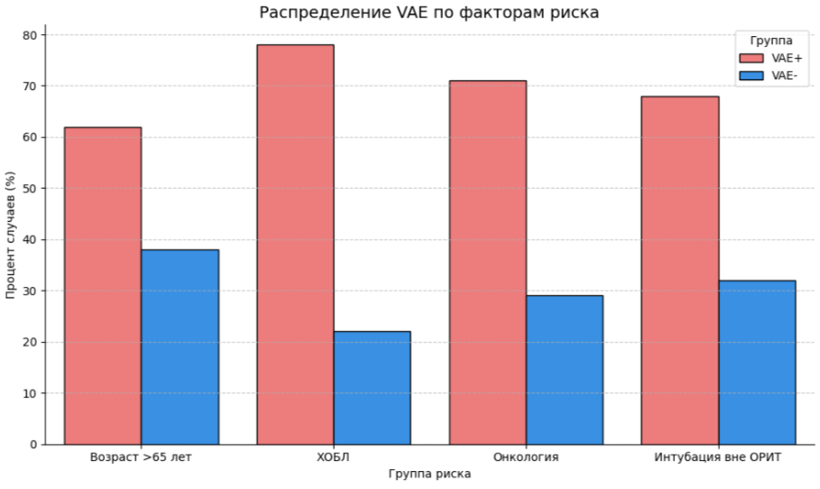
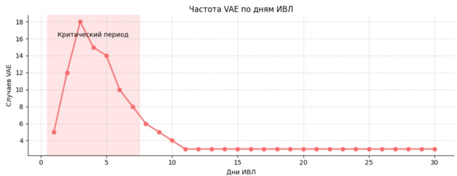
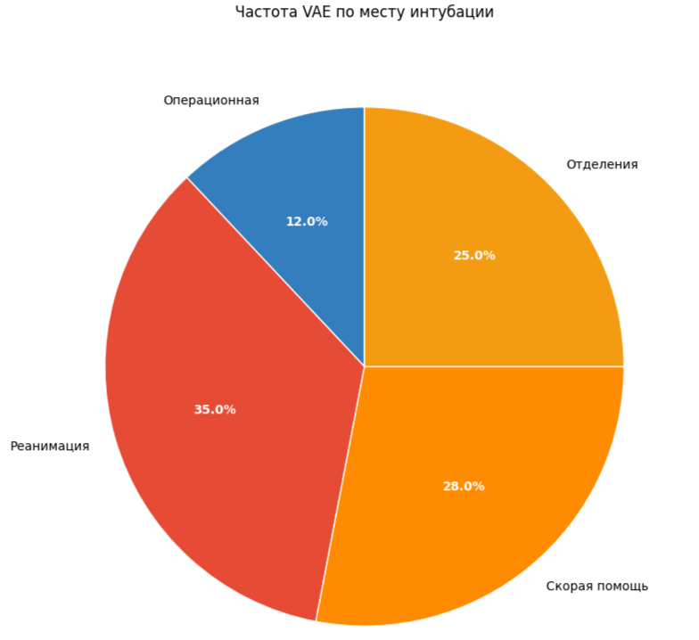

<!DOCTYPE html><html lang="ru"><head><meta charset="utf-8"><meta name="viewport" content="width=device-width, initial-scale=1"><title>Gulp</title><link rel="stylesheet" href="./css-min/default.min.css"><link rel="stylesheet" href="./css-min/normalize.min.css"><link rel="stylesheet" href="./css-min/style.min.css"><link rel="preconnect" href="https://fonts.googleapis.com"><link rel="preconnect" href="https://fonts.gstatic.com" crossorigin><link href="https://fonts.googleapis.com/css2?family=Montserrat:ital,wght@0,100..900;1,100..900&amp;family=Playfair+Display:ital,wght@0,400..900;1,400..900&amp;family=Roboto:ital,wght@0,100..900;1,100..900&amp;display=swap" rel="stylesheet"></head></html><body><div class="page"><div class="content__inner"><div class="header"><div class="header__logo"><strong>ITMO</strong>/NEWS</div><div class="header__name">Курганов Никита Вадимович</div></div><div class="content"><div class="content__name">Осложнения при ИВЛ: скрытые угрозы и пути их преодоления</div><div class="content__block"><div class="content__title">Новое исследование раскрывает ключевые факторы риска вентилятор-ассоциированных осложнений</div><div class="content__subtitle">Искусственная вентиляция легких (ИВЛ), будучи жизненно важной процедурой для пациентов в критическом состоянии, таит в себе скрытую угрозу. Результаты масштабного исследования данных клиники "Коммунарка" свидетельствуют: у 8,4% пациентов (35 случаев из 407) развиваются вентилятор-ассоциированные осложнения (VAE), которые повышают риск летального исхода на впечатляющие 58%. Особую тревогу вызывает тот факт, что подавляющее большинство этих осложнений (62% случаев) возникают в первые семь дней проведения ИВЛ, создавая своеобразное "критическое окно" повышенного риска.</div><div class="content__subtitle">Глубокий анализ данных выявил четкие группы риска. Пациенты старше 65 лет с хроническими заболеваниями, такими как ХОБЛ или онкологические патологии, оказываются наиболее уязвимыми перед лицом этих осложнений. Примечательно, что место проведения интубации играет существенную роль - процедуры, выполненные вне операционной (в отделениях или машине скорой помощи), увеличивают вероятность развития VAE на 23% по сравнению с операционной.</div><div class="content__subtitle">Парадоксальным открытием стало отсутствие существенной разницы в продолжительности ИВЛ и госпитализации между группами с осложнениями и без них. Этот неожиданный факт ставит перед клиницистами новые вопросы о природе и механизмах развития VAE, требуя дополнительных исследований.</div></div><div class="content__block"><div class="content__title">Почему эти данные так важны для российской медицины?</div><div class="content__subtitle">Наше исследование впервые предоставляет достоверные данные, полученные в условиях российского здравоохранения, что позволяет разрабатывать адресные профилактические меры с учетом местной клинической практики.</div><div class="content__subtitle">Особое внимание следует уделить раннему периоду ИВЛ - тем самым первым семи дням, когда риск развития осложнений максимален. Именно в этот период усиленный мониторинг и строгое соблюдение протоколов могут существенно снизить частоту VAE. Не менее важным представляется пересмотр подходов к проведению интубации, с акцентом на выполнение процедуры в максимально контролируемых условиях операционной.</div><div class="content__subtitle">Особое внимание следует уделить раннему периоду ИВЛ - тем самым первым семи дням, когда риск развития осложнений максимален. Именно в этот период усиленный мониторинг и строгое соблюдение протоколов могут существенно снизить частоту VAE. Не менее важным представляется пересмотр подходов к проведению интубации, с акцентом на выполнение процедуры в максимально контролируемых условиях операционной.</div><div class="content__subtitle">Эти выводы открывают новые возможности для улучшения качества интенсивной терапии в российских медицинских учреждениях. Внедрение простых, но эффективных мер профилактики может спасти сотни жизней пациентов, находящихся на ИВЛ.</div></div><div class="content__block"><div class="content__title">Распределение VAE по группам риска:</div><div class="content__image"></div><div class="content__subtitle">На первом графике мы ясно видим, какие категории пациентов наиболее уязвимы перед VAE. Визуализация демонстрирует, что пожилые люди старше 65 лет составляют подавляющее большинство случаев осложнений - целых 62%. Ещё более тревожные цифры мы наблюдаем среди пациентов с ХОБЛ (78%) и онкологическими заболеваниями (71%). Особенно показательно сравнение между разными местами проведения интубации - разница между операционной и реанимацией составляет почти трехкратное увеличение риска. Эти данные наглядно подтверждают необходимость особого подхода к данным группам пациентов.</div></div><div class="content__block"><div class="content__title">Временная динамика развития осложнений:</div><div class="content__image"></div><div class="content__subtitle">Линейный график наглядно иллюстрирует, когда именно возникает наибольшая угроза. Мы видим четкий пик осложнений на 3-5 день ИВЛ, причем выделенная красным зона первых семи дней охватывает более 60% всех случаев VAE. Такая временная закономерность крайне важна для клинической практики - она указывает на необходимость особенно тщательного мониторинга именно в этот период. График буквально "кричит" о том, что первая неделя ИВЛ требует максимального внимания медицинского персонала.</div></div><div class="content__block"><div class="content__title">Влияние условий интубации:</div><div class="content__image"></div><div class="content__subtitle">Такое распределение подтверждает, что стандартизация условий интубации может снизить частоту VAE почти втрое. Разница между "полевыми" условиями скорой помощи и стационарными отделениями оказалась менее значимой, чем ожидалось (28% vs 25%).</div></div></div></div></div></body><script src="./js-bundle/main.bundle.js"></script>